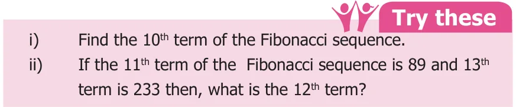
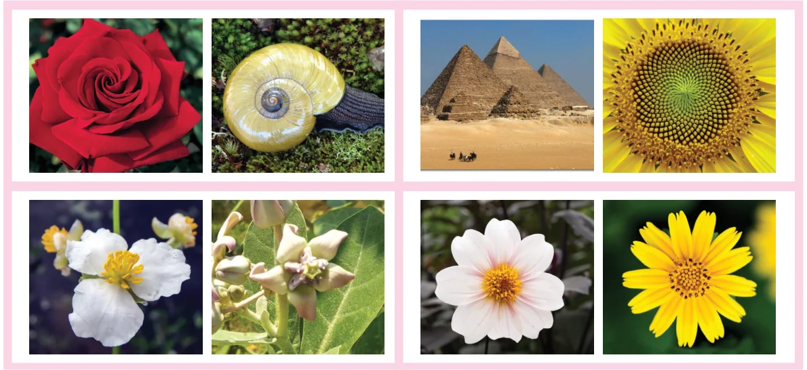

<!DOCTYPE html>
<html lang="en">
<head>
<meta charset="UTF-8">
<meta name="viewport" content="width=device-width,initial-scale=1">
<title>5.2 Iterative Process in Numbers — Information Processing</title>
<meta name="description" content="Class 6 Mathematics · Term 3 · Information Processing · 5.2 Iterative Process in Numbers">
<link rel="icon" href="data:image/svg+xml,<svg xmlns='http://www.w3.org/2000/svg' viewBox='0 0 100 100'><text y='.9em' font-size='90'>📘</text></svg>">
<link rel="stylesheet" href="../../../assets/book.css">
<link rel="stylesheet" href="https://cdn.jsdelivr.net/npm/katex@0.16.11/dist/katex.min.css" crossorigin="anonymous">
</head>
<body>
<header class="topbar">
<div class="topbar-in">
  <div class="crumb">
    <span class="c1"><a href="../../../index.html">Library</a> · <a href="../../index.html">Class 6 Mathematics · Term 3</a></span>
    <span class="c2">Information Processing · 5.2 Iterative Process in Numbers</span>
  </div>
  <a class="tb-btn" data-nav="prev" href="../../05-information-processing/01-introduction-5.1/index.html" title="5.1 Introduction">←</a>
  <details class="drawer"><summary class="tb-btn" title="Sections in this chapter">☰</summary>
<div class="drawer-panel"><div class="dh">Information Processing</div><a href="../01-introduction-5.1/index.html">5.1 Introduction</a><a href="../02-iterative-process-in-numbers-5.2/index.html" aria-current="page">5.2 Iterative Process in Numbers</a><a href="../03-euclid-s-game-5.3/index.html">5.3 Euclid’s game</a><a href="../04-following-and-devising-algorithms-5.4/index.html">5.4 Following and Devising Algorithms</a><a href="../05-arranging-things-and-putting-them-in-order-5.5/index.html">5.5 Arranging things and putting them in order</a><a href="../06-exercise-5.1/index.html">Exercise 5.1</a><a href="../07-exercise-5.2/index.html">Exercise 5.2; Miscellaneous Practice problems</a><a href="../08-summary/index.html">Summary</a></div></details>
  <a class="tb-btn" data-nav="next" href="../../05-information-processing/03-euclid-s-game-5.3/index.html" title="5.3 Euclid’s game">→</a>
  <button class="tb-btn" data-theme-toggle title="Toggle light / dark" aria-label="Toggle light or dark theme">◐</button>
</div>
<div class="progress"><span style="width:80.4%"></span></div>
</header>
<main class="wrap">
<div class="sec-head">
  <p class="eyebrow"><a href="../index.html">Chapter 5 · Information Processing</a></p>
  <h1>5.2 Iterative Process in Numbers</h1>
  <p class="sec-meta">Textbook pages 2–4 · 7 figures</p>
</div>
<article class="prose">
<p>The above iterative processes can be seen in our daily life. It can be seen in number sequences also. The numbers may increase or decrease following a pattern.</p>
<ul class="qlist">
<li><span class="mk">1.</span><span class="lt">Observe the following sequences and the pattern that generates each one of them.</span></li>
</ul>
<p> The sequence 1, 3, 5, 7, … is generated by the pattern 1, 1+2, 3+2, 5+2...  The sequence 50, 48, 46, 44,… is generated by the pattern 50, 50-2, 48-2, 46-2...  The sequence 2, 4, 6,… is generated by the pattern 1x2, 2x2 ; 3x2, ...  The sequence 1, 4, 9, 16… is generated by the pattern 1x1, 2x2 , 3x3...  The sequence 2, 6, 12, 20, 30,… is generated by the pattern 1x2, 2x3, 3x4, 4x5, ...  The sequence 2, 4, 8,16,… is generated by the pattern 2x1, 2x2, 2x2x2...</p>
<ul class="qlist">
<li><span class="mk">2.</span><span class="lt">Observe the pattern, 1, 10, 100, ... . When the number of zeros increase the value also</span></li>
</ul>
<p>increases.</p>
<ul class="qlist">
<li><span class="mk">3.</span><span class="lt">In the same way, can you guess the next number in the special number sequence given</span></li>
</ul>
<p>below?</p>
<p>1, 1, 2, 3, 5, 8, 13, 21, 34,…</p>
<p>Yes it is 55, how? You have got it by adding 21 and 34. Haven’t you? Are you able to recognize the pattern in the above sequence? Yes, if we add the previous two consecutive terms, we get the next term as</p>
<div class="mathblock"><p>\(1+1 =2\), 1+2=3, 2+3=5, 3+5=8 , 5+8=13,…</p></div>
<p>This special pattern of numbers is called the Fibonacci sequence. Each term in the Fibonacci sequence is called a Fibonacci number.</p>
<ul class="qlist">
<li><span class="mk">4.</span><span class="lt">Lucas numbers form a sequence of numbers like the Fibonacci numbers and they are</span></li>
</ul>
<p>closely related to the Fibonacci numbers. Instead of starting with 1 and 1, Lucas numbers start with 1 and 3. The Lucas sequence is 1, 3, 4, 7, 11, 18, 29, 47, 76, 123, ... In all the above patterns of numbers, we can see the iterative processes.</p>
<figure class="fig side-fig"></figure>
<figure class="fig wide"></figure>
<h3 id="s-fibonacci-numbers-in-nature">Fibonacci numbers in nature</h3>
<p>We come across the existence of Fibonacci sequence in many natural phenomena like spiral in a shell, arrangement of petals in flowers, branches of a tree, seeds in the head of a sunflower, petals on a daisy, the cells in the bee-hive, etc. Mathematical patterns are found in the distinct marking on animals and the structure of seashells also.</p>
<figure class="fig wide"></figure>
<h2 id="s-note-think">Note Think</h2>
<p>We can also begin the Fibonacci sequence Are two consecutive Fibonacci with 0 and 1, instead of 1 and 1. numbers relatively prime?</p>
<p>Golden Ratio: The Portrait of Mona Lisa has Consider the ratio of successive Fibonacci Fibonacci spiral pattern. This is one numbers \(23 =1 5\). , \(53 =1 66\). , \(58 =1 6\). , of the reasons for the enhanced beauty of Mona Lisa.</p>
<p>\(13 =1 625\). , \(21 =1 6153\). ,... you can see 8 13</p>
<p>the pattern, getting closer to 1.618 and that is denoted by Φ called the Golden Ratio (Φ=1.618). It is observed that shapes having Golden Ratio appear beautiful.</p>
</article>
<nav class="pager"><a class="" data-nav="prev" href="../../05-information-processing/01-introduction-5.1/index.html"><span class="dir">← Previous</span><span class="t">5.1 Introduction</span><span class="ch">Information Processing</span></a><a class="nx" data-nav="next" href="../../05-information-processing/03-euclid-s-game-5.3/index.html"><span class="dir">Next →</span><span class="t">5.3 Euclid’s game</span><span class="ch">Information Processing</span></a></nav>
</main><footer class="site">Generated from the source textbook PDFs · text, figures and exercises belong to their respective publishers.</footer><script defer src="https://cdn.jsdelivr.net/npm/katex@0.16.11/dist/katex.min.js" crossorigin="anonymous"></script>
<script defer src="https://cdn.jsdelivr.net/npm/katex@0.16.11/dist/contrib/auto-render.min.js" crossorigin="anonymous"
  onload="renderMathInElement(document.body,{delimiters:[
    {left:'\\(',right:'\\)',display:false},
    {left:'$$',right:'$$',display:true},
    {left:'\\[',right:'\\]',display:true}],throwOnError:false,ignoredTags:['script','noscript','style','textarea','pre','code']})"></script>
<script src="../../../assets/book.js"></script>
<script defer src="../../../../assets/search.js?v=1789782769"></script>
<script defer src="../../../../assets/screenshot.js?v=1789782769"></script>
</body>
</html>
